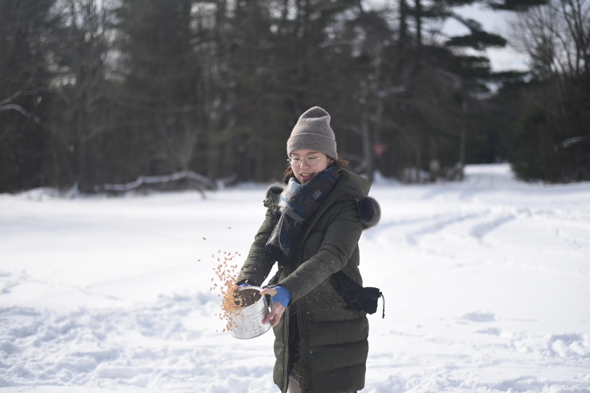
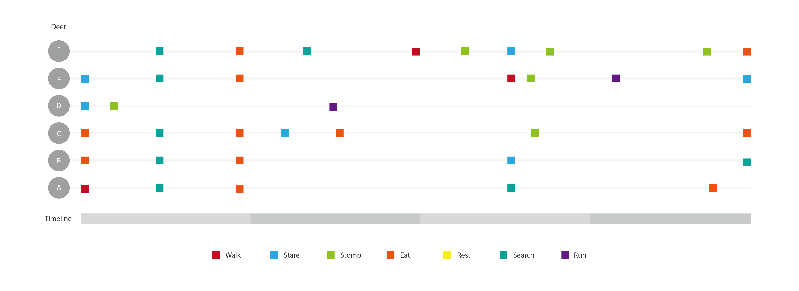

Week 2
Californian Condors / Gymnogyps californianus
Location: San Diego Zoo
Methods: Live cam, paper documentation and OpenCV motion tracking
Duration: 21mins
Californian Condors Experts:
- Myra Finklestein - myraf@ucsc.edu
- Noel F. Synder
- Zeka Kuspa - Environmental Intoxicology
- PhD in Microbiology and Environmental Toxicology
Observation Documentation:
I went on San Diego Zoo Live cam to observe Californian Condors. I recorded the live cam while taking notes on my paper. Then I realized the condos don't move much at all. It makes sense since they are in a protective enclosed setting. Thus I decided to use Processing and OpenCV to experiment documenting the minimal movement of condors within such an enclosed environment.
In Processing, Utilizing background subtraction, motion/blob tracking, the movement will be highlighted against the still background.
I used red to outline the movement and highlighted the different times of moving. For example, when Condor C flew up to the branch
and nudged Condor B off.
You can find the code here


The observation video(19mins)
Discoveries:
Live Cam can be very unstable. The image is always glitchy, which can interfere with the quality of ethnography
Some actions are very subtle to be observed from a far distance
The sound is not recorded through the Live Cam, so for creatures like birds, without sound, there’re a lot of actions and meanings be missed.
Condors are endangered species. They are also flying creatures who wouldn’t be able to fly much under the zoo monitoring. Most of the time, they are sitting around in front of the cam, unable to fly. Maybe the zoo setting isn’t the best environment to observe condors’ natural behaviors
White-tailed Deer / Odocoileus virginianus
Location: Upstate New York - halfmoon road, Sulivan County
Methods: in field food-attraction, video recording, observing within close distance
Duration: 24mins
White-tailed Deer Experts:
- H. Brian Underwood - SUNY ESF
- 315-470-6820 | hbunderw@syr.edu
Observation Documentation:
This weekend, I was in Upstate New York for an outing trip. My friends are I laid corns everywhere in the snowfield in front of our cabin, expecting some animals(deers or squirrels to emerge).We waited for the most of the day until the sun starts to set. A couple of deers came out of the woods and approached our direction. They started to search and discovered the corns. My friends and I stopped and went totally silent as we didn't want to disturb deers' activities.
After I started observing while recording, I immediately got lost track on focusing one one deer because they were so many of them.
Instead, I came home and watched my footage again and graphed a chart that's supposed to be continuous observation for the duration of my video. 


Discoveries:
I had a dilemma doing this observation in particular. I would have no access or proper opportunities to observing
the deers if it wasn’t because we poured corns on the ground near us. I understand the ideal situation is when
there’s no human intervention or disturbance through the ethnography, but again without such a control environment,
I wouldn’t even have a chance to get to see the deers.
Deers stomp.
They usually stomp when they start at you for a bit. I later on knew that they do that when they become alertful.
It's difficult to focus on one animal out of a group of animals, especially for continuous obervsation.